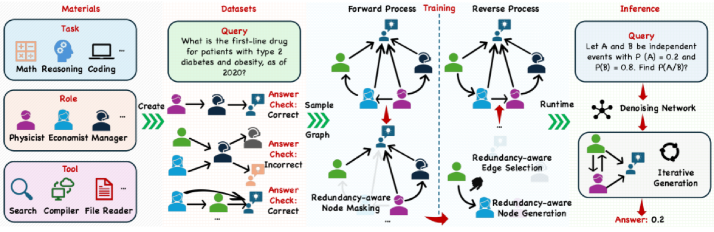

Why it matters왜 중요한가
The real lever in multi-agent collaboration is not "how many agents talk" but "how non-redundant their connections are."
멀티에이전트 협업의 진짜 지렛대는 "몇 명이 대화하느냐"가 아니라 "그 연결이 얼마나 비중복적이냐"다.
A multi-agent system is a directed graph: nodes are agents, edges carry information. Prior work either hand-crafts the graph (chain, star, tree, full-mesh) or learns it in a single step from the task description, then optionally prunes edges afterward (post hoc). The authors argue this is backwards — complex topologies cost 2–11.8× more tokens than a simple chain, and post-hoc pruning can only make local edits, never redesign from scratch. RADAR instead grows the graph from an empty one, reasoning about redundancy during construction (ad hoc), and conditions each step on the actual query so easy tasks get sparse graphs and hard tasks get richer ones.
멀티에이전트 시스템은 방향 그래프다: 노드는 에이전트, 엣지는 정보를 나른다. 기존 연구는 그래프를 손으로 설계(체인·스타·트리·완전연결)하거나 작업 설명으로부터 한 번에 학습한 뒤, 사후에 엣지를 가지치기(post hoc)했다. 저자들은 이게 거꾸로라고 본다 — 복잡한 토폴로지는 단순 체인보다 토큰을 2~11.8배 더 쓰고, 사후 가지치기는 국소 수정만 가능할 뿐 처음부터 재설계하지 못한다. RADAR는 대신 빈 그래프에서 출발해 생성 중에 중복을 고려(ad hoc)하며 키우고, 각 단계를 실제 질의에 조건화해 쉬운 작업엔 희소한, 어려운 작업엔 풍부한 그래프를 만든다.

By the numbers핵심 숫자
(6 benchmarks, best)RADAR 평균 정확도
(6개 벤치, 최고)
baseline (ARG-Designer)최강 베이스라인 대비
평균 향상 (ARG-Designer)
efficient, ~½ of G-DesignerGSM8K 토큰 — 최저,
G-Designer의 약 ½
single agent (SVAMP)단일 에이전트 대비
최대 향상 (SVAMP)
prompt attack (MMLU)프롬프트 공격 시
정확도 하락 (MMLU)
· gpt-4o-mini벤치마크 · 5 에이전트
· gpt-4o-mini
Results — best accuracy on every benchmark결과 — 모든 벤치마크에서 최고 정확도
| Benchmark | Vanilla | ARG-Designer | RADAR | Δ vs Vanilla |
|---|---|---|---|---|
| MMLU | 78.54 | 79.10 | 83.66 | +5.12 |
| GSM8K | 87.45 | 91.25 | 92.51 | +5.06 |
| MultiArith | 96.85 | 98.55 | 98.81 | +1.96 |
| SVAMP | 86.67 | 92.21 | 93.26 | +6.59 |
| AQuA | 78.92 | 81.10 | 82.84 | +3.92 |
| HumanEval | 87.08 | 89.19 | 91.28 | +4.20 |
| Avg. | 85.92 | 88.57 | 90.32 | +4.40 |
In one diagram한 장의 그림
Idea: bake redundancy control into generation아이디어: 중복 제어를 생성 과정에 내장
Effective Size (φ)
Borrowed from social-network theory (Burt, 1992): a node's effective size is its number of neighbors minus the redundancy among them. RADAR adapts it to directed agent graphs, discounting neighbors that share the same role and are interconnected — so a high φ means an agent receives diverse, complementary information, not echoes of the same view.
사회망 이론(Burt, 1992)에서 차용: 노드의 effective size는 이웃 수에서 이웃 간 중복을 뺀 값이다. RADAR는 이를 방향 에이전트 그래프에 맞춰, 같은 역할이면서 서로 연결된 이웃을 깎는다 — φ가 높다는 건 그 에이전트가 같은 견해의 메아리가 아니라 다양하고 상보적인 정보를 받는다는 뜻.
Ordering + denoising nets순서망 + 디노이징망
An RGCN ordering network (trained by REINFORCE) decides which node to reveal next; a GAT denoising network reconstructs that node and its edges, both conditioned on φ and the query Q. A policy-gradient utility term feeds back actual task accuracy, so generation is steered toward structures that work, not just plausible ones.
RGCN 순서망(REINFORCE로 학습)이 다음에 드러낼 노드를 정하고, GAT 디노이징망이 그 노드와 엣지를 복원한다 — 둘 다 φ와 질의 Q에 조건화. 정책경사 utility 항이 실제 작업 정확도를 되먹여, 그럴듯한 구조가 아니라 실제로 작동하는 구조 쪽으로 생성을 이끈다.
How it works어떻게 작동하나
- Build a seed dataset씨앗 데이터셋 구축Instantiate diverse baseline topologies (fully connected, mesh, star, layered, random) with 3–4 agents, assign random roles, and label each by whether it solves sampled training queries — only 50 queries per dataset.다양한 베이스라인 토폴로지(완전연결·메시·스타·계층·랜덤)를 3~4 에이전트로 만들고 역할을 무작위 배정해, 샘플 질의를 푸는지로 라벨링 — 데이터셋당 단 50개 질의.
- Train diffusion with φφ로 확산 학습Train the GAT denoising network (NLL lower bound) and the RGCN ordering network (REINFORCE), both conditioned on effective size φ and query Q, to reverse the node-masking diffusion.GAT 디노이징망(NLL 하한)과 RGCN 순서망(REINFORCE)을 유효크기 φ와 질의 Q에 조건화해, 노드 마스킹 확산을 역으로 복원하도록 학습.
- Add a utility signal유틸리티 신호 추가Since accuracy is non-differentiable, a policy-gradient estimator periodically scores a subset of generated graphs by real task utility u(G) and back-props that reward into the denoiser.정확도는 미분 불가하므로, 정책경사 추정기가 생성 그래프 일부를 실제 utility u(G)로 주기적으로 평가해 그 보상을 디노이저에 역전파.
- Generate per query질의별 생성At inference, encode the query (all-MiniLM-L6-v2, 384-dim), then iteratively denoise an empty graph into a 5-agent, low-redundancy topology tailored to that query → best accuracy on all 6 benchmarks with the lowest token cost.추론 시 질의를 인코딩(all-MiniLM-L6-v2, 384차원)한 뒤, 빈 그래프를 반복 디노이징해 그 질의 맞춤 5에이전트 저중복 토폴로지 생성 → 6개 벤치 최고 정확도 + 최저 토큰.
What to take away그래서, 가져갈 것
Ad hoc beats post hoc. Building redundancy awareness into generation, instead of pruning after, lets RADAR redesign topologies from scratch — best accuracy on all six benchmarks.
사후보다 생성 중이 낫다. 중복 인식을 사후 가지치기가 아니라 생성 안에 넣어, RADAR는 토폴로지를 처음부터 재설계 — 6개 벤치 전부 최고 정확도.
Accuracy and cost together. On GSM8K it is both the most accurate and the most token-efficient (~½ of G-Designer) — efficiency need not be traded for performance.
정확도와 비용을 동시에. GSM8K에서 가장 정확하면서 가장 토큰 효율적(G-Designer의 약 ½) — 효율과 성능을 맞바꿀 필요가 없다.
Robust by structure. When two of five agents are turned into liars, RADAR's accuracy barely moves — diverse, non-redundant wiring resists a single bad source.
구조로 강건. 5명 중 2명을 거짓말쟁이로 바꿔도 RADAR 정확도는 거의 안 흔들린다 — 다양·비중복 연결이 단일 오염원에 강하다.
A classic graph metric, repurposed. Effective size — a 1992 social-network idea — turns out to be a clean inductive bias for LLM agent topologies.
고전 그래프 지표의 재활용. 1992년 사회망 개념인 effective size가 LLM 에이전트 토폴로지의 깔끔한 귀납 편향으로 드러난다.